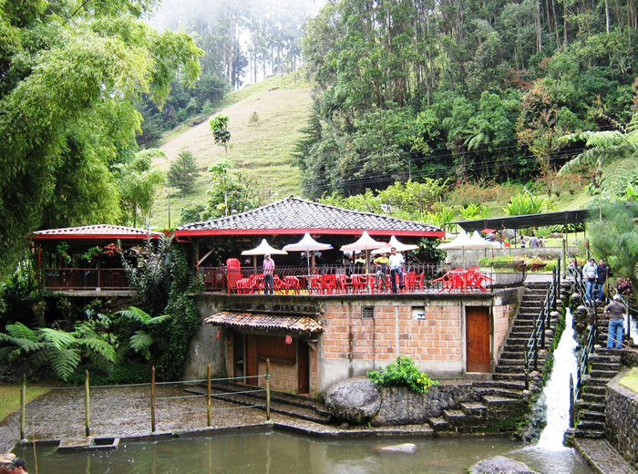

SESIÓN
CARNE BRAVA
Comida de Mar
Calle 3 # 5-28
Telefono: 314 567 8976

RESEÑA
Comidas tipicas Santandereanas
HORARIOS
HOY 12:00 - 15:00
Lunes 12:00 - 15:00
Martes 12:30 - 15:00
MEDIOS DE PADO
UBICACIÓN
Desde
Hasta
Direcciones de la ruta
Distancia y tiempo: